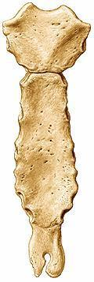
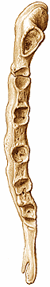
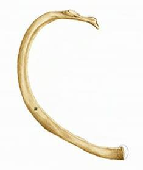
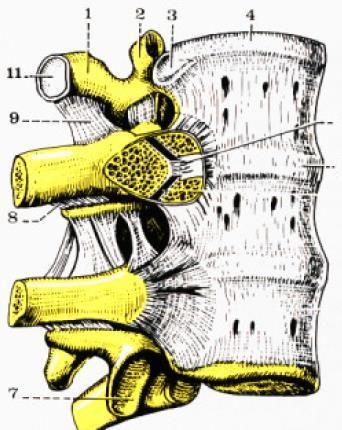
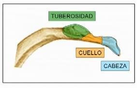
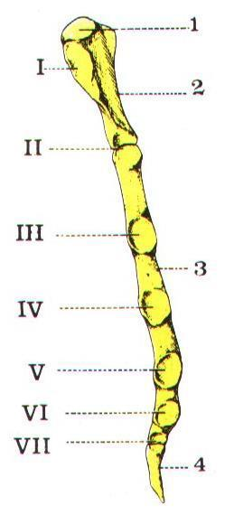
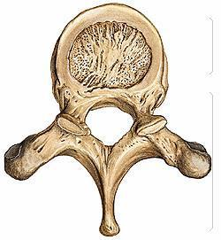

ClinicusMed · Dossiê Clinicus — Padrão de Excelência

| Característica | Detalhe |
|---|---|
| Tipo | Ímpar, mediano e simétrico. Osso PLANO |
| Tamanho | 15-20 cm de comprimento |
| Articulações | 2 clavículas + costelas (via cartilagens costais) |

| Segmento | Característica |
|---|---|
| Manúbrio | Superior, largo — articula-se com as clavículas e as 1ªs costelas |
| Corpo | Médio, mais longo — permite inserção das cartilagens costais |
| Apêndice Xifoide | Inferior, forma/tamanho variável — ossifica na idade adulta (sincondrose que vira sinostose) |
| Tipo | Numeração | Articulação com Esterno |
|---|---|---|
| Verdadeiras | 1ª a 7ª | Diretamente, via cartilagem costal PRÓPRIO |
| Falsas | 8ª, 9ª, 10ª | Indiretamente, via cartilagem costal COMUM (da costela superior) |
| Flutuantes | 11ª e 12ª | SEM conexão anterior com o esterno — livres |


| Parte | Componentes/Característica |
|---|---|
| Extremidade Posterior | Cabeça (articula com corpos vertebrais), Colo, Tubérculo (articula com apófises transversas) |
| Corpo (parte média) | Face lateral convexa; face medial côncava, com o SULCO COSTAL (canal costal) pro pacote vasculonervoso intercostal |
| Extremidade Anterior | Articula-se com a cartilagem costal correspondente |

| Característica | Detalhe |
|---|---|
| Forma | A mais LARGA, CURTA e curvada de todas as costelas — quase horizontal |
| Superfícies | Face superior e face inferior (pergunta clássica de prova) |
| Face Superior | 2 sulcos (artéria e veia subclávia), separados pelo tubérculo do músculo escaleno anterior (tubérculo de Lisfranc) |
| Face Inferior | Lisa |
| Articulação | ÚNICA faceta articular — conecta-se EXCLUSIVAMENTE com T1 (diferente das demais costelas, que se articulam com 2 vértebras) |
| Costela | Característica Distintiva |
|---|---|
| 1ª | Mais curta e curva; sulcos pra artéria/veia subclávia; articula só com T1 |
| 2ª | Mais longa que a 1ª; tuberosidade pra inserção do serrátil anterior; articula com T1 e T2 |
| 10ª | Geralmente uma única faceta articular — só com T10 |
| 11ª e 12ª (flutuantes) | Mais curtas/delgadas; uma única faceta articular; SEM tubérculo; SEM cartilagem costal anterior |
Vamos acompanhar uma nadadora de 24 anos com dormência e formigamento no braço, relacionando o caso à anatomia da 1ª costela. O caso evolui em 3 níveis — clica em cada um pra ver como as coisas vão se desenrolando.
O sistema guarda, no seu navegador, quais cards você já sabe bem e quais precisam voltar mais cedo — cada vez que você avalia um card, ele recalcula quando ele deve voltar.
10 questões, do mais básico ao mais puxado. Escolhe uma alternativa, depois clica em "Ver comentário completo" — vale a pena ler até quando você acerta, porque o comentário explica cada alternativa, não só a certa.
Todas as imagens desse capítulo, reunidas num só lugar pra revisão rápida.

